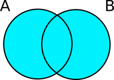
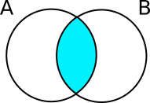
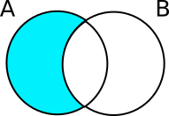
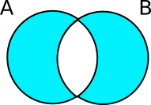
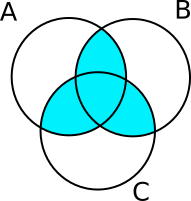

Sets¶
Download exercises zip¶
A set is a mutable unordered collection of immutable distinct elements (that is, without duplicates). The Python datatype to represent sets is called set.
What to do¶
Unzip exercises zip in a folder, you should obtain something like this:
sets
sets1.ipynb
sets1-sol.ipynb
jupman.py
WARNING: to correctly visualize the notebook, it MUST be in an unzipped folder !
open Jupyter Notebook from that folder. Two things should open, first a console and then a browser. The browser should show a file list: navigate the list and open the notebook
sets.ipynbGo on reading the exercises file, sometimes you will find paragraphs marked Exercises which will ask to write Python commands in the following cells.
Shortcut keys:
to execute Python code inside a Jupyter cell, press
Control + Enterto execute Python code inside a Jupyter cell AND select next cell, press
Shift + Enterto execute Python code inside a Jupyter cell AND a create a new cell aftwerwards, press
Alt + EnterIf the notebooks look stuck, try to select
Kernel -> Restart
Creating a set¶
We can create a set using curly brackets, and separating the elements with commas ,
Let’s try a set of characters:
[2]:
s = {'b','a','d','c'}
[3]:
type(s)
[3]:
set
WARNING: SETS ARE *NOT* ORDERED !!!
DO NOT BELIEVE IN WHAT YOU SEE !!
Let’s try printing the set:
[4]:
print(s)
{'b', 'd', 'c', 'a'}
The output shows the order in which the print was made is different from the order in which we built the set. Also, according to the Python version you’re using, on your computer it might be even different!
This is because order in sets is NOT guaranteed: the only thing that matters is whether or not an element belongs to a set.
As a further demonstration, we may ask Jupyter to show the content of the set, by writing only the variable s WITHOUT print:
[5]:
s
[5]:
{'a', 'b', 'c', 'd'}
Now it appears in alphabetical order! It happens like so because Jupyter show variables by implicitly using the pprint (pretty print), which ONLY for sets gives us the courtesy to order the result before printing it. We can thank Jupyter, but let’s not allow it to confuse us!
Elements index: since sets have no order, asking Python to extract an element at a given position would make no sense. Thus, differently from strings, lists and tuples, with sets it’s NOT possible to extract an element from an index:
s[0]
---------------------------------------------------------------------------
TypeError Traceback (most recent call last)
<ipython-input-352-c9c96910e542> in <module>
----> 1 s[0]
TypeError: 'set' object is not subscriptable
We said that a set has only distinct elements, that is without duplicates - what happens if we try to place some duplicate anyway?
[6]:
s = {6,7,5,9,5,5,7}
[7]:
s
[7]:
{5, 6, 7, 9}
We note that Python silently removed the duplicates.
Converting sequences to sets¶
As for lists and strings, we can create a set from another sequence:
[8]:
set('acacia') # from string
[8]:
{'a', 'c', 'i'}
[9]:
set( [1,2,3,1,2,1,2,1,3,1] ) # from list
[9]:
{1, 2, 3}
[10]:
set( (4,6,1,5,1,4,1,5,4,5) ) # from tuple
[10]:
{1, 4, 5, 6}
Again, we notice in the generated set there are no duplicates
REMEMBER: Sets are useful to remove duplicates from a sequence
Mutable elements and hashes¶
Let’s see again the definition from the beginning:
A set is a mutable unordered collection of immutable distinct elements
So far we only created the set using immutable elements like numbers and strings.
What happens if we place some mutable elements, like lists?
>>> s = { [1,2,3], [4,5] }
---------------------------------------------------------------------------
TypeError Traceback (most recent call last)
<ipython-input-40-a6c538692ccb> in <module>
----> 1 s = { [1,2,3], [4,5] }
TypeError: unhashable type: 'list'
We obtain TypeError: unhashable type: 'list', which literally means Python didn’t manage to calculate the hash of the list. What could this particular dish ever be?
What is the hash? The hash of an object is a number that Python can associate to it, for example you can see the hash of an object by using the function with the same name:
[11]:
hash( "This is a nice day" ) # string
[11]:
-3262299758023616108
[12]:
hash( 111112222223333333344444445555555555 ) # number
[12]:
651300278308214397
Imagine the hash is some kind of label with these properties:
it is too short to completely describe the object to which it is associated (that is: given a hash label, you cannot reconstruct the object it represents)
it is enough long to identify almost uniquely the object…
… even if in the world there might be different objects which have associated exactly the same label
What’s the relation with our sets? The hash has various applications, but typically Python uses it to quickly find an object in collections which are based on hashes, like sets and dictionaries. How much fast? Very: even with homongous sets, we always obtain an answer in a constant very short time! In other words, the answer speed does not depend on the set dimension (except for pathological cases we don’t review here).
This velocity is permitted by the fact that given some object to search, Python is able to rapidly calculate its hash label: then, with the label in the hand, so to speak, it can manage to quickly find in the memory store whether there are objects which have the same label. If they are found, they will almost surely be very few, so Python will only need to compare them with the searched one.
*Immutable* objects always have the same hash label from when they are created until the end of the program. Instead, the mutable ones behave differently: each time we change an object, the hash also changes. Imagine a market where employees place food by looking at labels and separating accordingly for example the coffee in the shelves for the breakfast and bleach in the shelves for detergents. If you are a customer and you want some coffee, you look at signs and directly go toward the shelves for breakfast stuff. Image what could happen if an evil sorcerer could transform the objects already placed into other objects, like for example the coffee into bleach (let’s assume that at the moment of the transmutation the hash label also changes). Much confusion would certainly follow, and, if we aren’t cautious, also a great stomachache or worse.
So to offer you the advantage of a fast search while avoiding disastrous situations, Python imposes to place inside sets only objects with a stable hash, that is immutable objects.
QUESTION: Can we insert a tuple inside a set? Try to verify your intuition with a code example.
Show answerEmpty set¶
WARNING: If you write {} you will obtain a dictionary, NOT a set !!!
To create an empty set we must call the function set():
[13]:
s = set()
[14]:
s
[14]:
set()
EXERCISE: try writing {} in the cell below and look at the object type obtained with type
[15]:
# write here
QUESTION: Can we try inserting a set inside another set? Have a careful look at the set definition, then verify your suppositions by writing some code to create a set which has another set inside.
WARNING: To perform the check, DO NOT use the set function, only use creation with curly brackets
QUESTION: If we write something like this, what do we get? (careful!)
set(set(['a','b']))
a set with
aandbinsidea set containing another set which contains
aandbas elementsan error (which one?)
QUESTION: Have a look at following expressions, and for each of them try to guess which result it produces (or if it gives an error):
{'oh','la','la'}
set([3,4,2,3,2,2,2,-1])
{(1,2),(2,3)}
set('aba')
str({'a'})
{1;2;3}
set( 1,2,3 )
set( {1,2,3} )
set( [1,2,3] )
set( (1,2,3) )
set( "abc" )
set( "1232" )
set( [ {1,2,3,2} ] )
set( [ [1,2,3,2] ] )
set( [ (1,2,3,2) ] )
set( [ "abcb" ] )
set( [ "1232" ] )
set((1,2,3,2))
set([(),()])
set([])
set(list(set()))
Exercise - dedup¶
Write some brief code to create a list lb which contains all the elements of the list la without duplicates and alphabetically sorted.
DO NOT change original list
laDO NOT use cycles
your code should work for any
la
la = ['c','a','b','c','d','b','e']
After your code, you should obtain:
>>> print(la)
['c', 'a', 'b', 'c', 'd', 'b', 'e']
>>> print(lb)
['a', 'b', 'c', 'd', 'e']
[16]:
la = ['c','a','b','c','d','b','e']
# write here
la = ['c', 'a', 'b', 'c', 'd', 'b', 'e']
lb = ['a', 'b', 'c', 'd', 'e']
Frozenset¶
INFO: this topic is optional for the purposes of the book
In Python also exists immutable sets which are called frozenset. Here we just remind that since frozensets are immutable they do have associated a hash label and thus they can be inserted as elements of other sets. For other info we refer to the official documentation.
Operators¶
Operator |
Result |
Description |
|---|---|---|
|
|
the number of elements in the set |
el |
|
verifies whether an element is contained in the set |
set | set |
|
union, creates a NEW set |
set |
|
intersetion, creates a NEW set |
set |
|
difference, creates a NEW set |
set |
|
symmetric difference, creates a NEW set |
|
|
checks whether two sets are equal or different |
Exercise - distincts¶
Given a string word, write some code that:
prints the distinct characters present in
wordas alphabetically ordered (without the square brackets!), together with their numberprints the number of duplicate characters found in total
Example 1 - given:
word = "ababbbbcdd"
after your code it must print:
word : ababbbbcdd
4 distincts : a,b,c,d
6 duplicates
Example 2 - given:
word = "cccccaaabbbb"
after your code it must print:
word : cccccaaabbbb
3 distinct : a,b,c
9 duplicates
[19]:
# write here
word : ababbbbcdd
4 distincts : a,b,c,d
6 duplicates
Union¶
The union operator | (called pipe) produces a NEW set containing all the elements from both the first and second set.

[20]:
{'a','b','c'} | {'b','c','d','e'}
[20]:
{'a', 'b', 'c', 'd', 'e'}
Note there aren’t duplicated elements
EXERCISE: What if we use the +? Try writing in a cell {'a','b'} + {'c','d','e'}. What happens?
[21]:
# write here
QUESTION: Look at the following expressions, and for each try guessing the result (or if they give an error):
{'a','d','b'}|{'a','b','c'}
{'a'}|{'a'}
{'a'|'b'}
{1|2|3}
{'a'|'b'|'a'}
{{'a'}|{'b'}|{'a'}}
[1,2,3] | [3,4]
(1,2,3) | (3,4)
"abc" | "cd"
{'a'} | set(['a','b'])
set(".".join('pacca'))
'{a}'|'{b}'|'{a}'
set((1,2,3))|set([len([4,5])])
{()}|{()}
{'|'}|{'|'}
QUESTION: Given two sets x and y, the expression
len(x | y) <= len(x) + len(y)
produces:
an error (which one?)
always
Truealways
Falsesometimes
TruesometimesFalseaccording to values ofxandy
Exercise - everythingbut 1¶
Write some code which creates a set s4 which contains all the elements of s1 and s2 but does not contain the elements of s3.
Your code should work with any set
s1,s2,s3
Example - given:
s1 = set(['a','b','c','d','e'])
s2 = set(['b','c','f','g'])
s3 = set(['b','f'])
After your code you should obtain:
>>> print(s4)
{'d', 'a', 'c', 'g', 'e'}
[22]:
s1 = set(['a','b','c','d','e'])
s2 = set(['b','c','f','g'])
s3 = set(['b','f'])
# write here
Intersection¶
The intersection operator & produces a NEW set which contains all the common elements of the first and second set.

[23]:
{'a','b','c'} & {'b','c','d','e'}
[23]:
{'b', 'c'}
QUESTION: Look at the following expressions, and for each try guessing wthe result (or if it gives an error):
{0}&{0,1}
{0,1}&{0}
set("capra") & set("campa")
set("cba") & set("dcb")
{len([1,2,3]),4} & {len([5,6,7])}
{1,2}&{1,2}
{0,1}&{}
{0,1}&set()
set([1,2,3,4,5][::2]) & set([1,2,3,4,5][2::2])
{((),)}&{()}
{(())}&{()}
Difference¶
The difference operator - produces a NEW set containing all the elements of the first set except the ones from the second:

[24]:
{'a','b','c','d'} - {'b','c','e','f','g'}
[24]:
{'a', 'd'}
QUESTION: Look at the following expressions, and for each try guessing the result (or if it gives an error):
{3,4,2}-2
{1,2,3}-{3,4}
'{"a"}-{"a"}'{1,2,3}--{3,4}
{1,2,3}-(-{3,4})
set("chiodo") - set("chiave")
set("prova") - set("prova".capitalize())
set("BarbA") - set("BARBA".lower())
set([(1,2),(3,4),(5,6)]) - set([(2,3),(4,5)])
set([(1,2),(3,4),(5,6)]) - set([(3,4),(5,6)])
{1,2,3} - set()
set() - {1,2,3}
QUESTION: Given two sets x and y, what does the following code produce? An error? Is it simplifiable?
(x & y) | (x-y)
Symmetric difference¶
The symmetric difference of two sets is their union except their intersection, that is all elements except the common ones:

In Python you can directly express it with the ^ operator:
[25]:
{'a','b','c'} ^ {'b','c','d','e'}
[25]:
{'a', 'd', 'e'}
Let’s check the result corresponds to the definition:
[26]:
s1 = {'a','b','c'}
s2 = {'b','c','d','e'}
(s1 | s2) - (s1 & s2)
[26]:
{'a', 'd', 'e'}
QUESTION: Look at the following expressions, and for each try guessing the result (or if it gives an error):
{'p','e','p','p','o'} ^ {'p','a','p','p','e'}
{'ab','cd'} ^ {'ba','dc'}
set('brodino') ^ set('bordo')
set((1,2,5,3,2,3,1)) ^ set((1,4,3,2))
QUESTION: given 3 sets A, B, C, what’s the expression to obtain the azure part?

Show answerQUESTION: If we use the following values in the previous exercise, what would the set which denotes the azure part contain?
A = {'a','ab','ac','abc'}
B = {'b','ab','bc','abc'}
C = {'c','ac','bc','abc'}
Once you guessed the result, try executing the formula you obtained in the previous exercise with the provided values and compare the results with the solution.
Show answerMembership¶
As for any sequence, when we want to check whether an element is contained in a set we can use the in operator which returns a boolean value:
[27]:
'a' in {'m','e','n','t','a'}
[27]:
True
[28]:
'z' in {'m','e','n','t','a'}
[28]:
False
in IS VERY FAST WHEN USED WITH SETS
The speed of in operator DOES NOT depend on the set dimension
This is a substantial difference with respect to other sequences we’ve already seen: if you try searching for an element with in in strings, lists or tuples, and the element to find is toward the end (or there isn’t at all), Python will have to look through the whole sequence.
not in¶
To check whether something is not belonging to a sequence, we can use two forms:
not in - form 1:
[29]:
"carrot" not in {"watermelon","banana","apple"}
[29]:
True
[30]:
"watermelon" not in {"watermelon","banana","apple"}
[30]:
False
not in - forma 2
[31]:
not "carrot" in {"watermelon","banana","apple"}
[31]:
True
[32]:
not "watermelon" in {"watermelon","banana","apple"}
[32]:
False
QUESTION: Look at the following expressions, and for each try guessing the result (or if it gives an error):
2*10 in {10,20,30,40}
'four' in {'f','o','u','r'}
'aa' in set('aa')
'a' in set(['a','a'])
'c' in (set('parco') - set('cassa'))
'cc' in (set('pacca') & set('zucca'))
[3 in {3,4}, 6 in {3,4} ]
4 in set([1,2,3]*4)
2 in {len('3.4'.split('.'))}
4 not in {1,2,3}
'3' not in {1,2,3}
not 'a' in {'b','c'}
not {} in set([])
{not 'a' in {'a'}}
4 not in set((4,))
() not in set([()])
QUESTION: the following expressions are similar. What do they have in common? What is the difference with the last one (beyond the fact it is a set)?
'e' in 'abcde'
'abcde'.find('e') >= 0
'abcde'.count('e') > 0
'e' in ['a','b','c','d','e']
['a','b','c','d','e'].count('e') > 0
'e' in ('a','b','c','d','e')
('a','b','c','d','e').count('e') > 0
'e' in {'a','b','c','d','e'}
Equality¶
We can check whether two sets are equal by using the equality operator ==, which given two sets return True if they contain the same elements or False otherwise:
[33]:
{4,3,6} == {4,3,6}
[33]:
True
[34]:
{4,3,6} == {4,3}
[34]:
False
[35]:
{4,3,6} == {4,3,6, 'hello'}
[35]:
False
Careful about removal of duplicates !
[36]:
{2,8} == {2,2,8}
[36]:
True
To verify the inequality, we can use the != operator:
[37]:
{2,5} != {2,5}
[37]:
False
[38]:
{4,6,0} != {2,8}
[38]:
True
[39]:
{4,6,0} != {4,6,0,2}
[39]:
True
Beware of duplicates and order!
[40]:
{0,1} != {1,0,0,0,0,0,0,0}
[40]:
False
QUESTION: Look at the following expressions, and for each try guessing the result (or if it gives an error):
{2 == 2, 3 == 3}
{1,2,3,2,1} == {1,1,2,2,3,3}
{'aa'} == {'a'}
set('aa') == {'a'}
[{1,2,3}] == {[1,2,3]}
set({1,2,3}) == {1,2,3}
set((1,2,3)) == {(1,2,3)}
{'aa'} != {'a', 'aa'}
{set() != set()}
set('scarpa') == set('capras')
set('papa') != set('pappa')
set('pappa') != set('reale')
{(),()} == {(())}
{(),()} != {(()), (())}
[set()] == [set(),set()]
(set('gosh') | set('posh')) == (set('shopping') - set('in'))
Methods like operators¶
There are methods which behave like the operators|, &, -, ^ by creating a NEW set.
NOTE: differently from operators, these methods accept as parameter any sequence, not just sets:
Method |
Result |
Description |
Related operator |
|---|---|---|---|
|
|
union, creas a NEW set |
| |
|
|
intersection, creates a NEW set |
|
|
|
difference, creates a NEW set |
|
|
|
symmetric difference, creates a NEW set |
|
Methods which MODIFY the first set on which they are called (and return None!):
Method |
Result |
Description |
|---|---|---|
|
|
union, MODIFIES |
|
|
intersection, MODIFIES |
|
|
difference, MODIFIES |
|
|
symmetric difference, MODIFIES |
union¶
We’ll only have a look at union/update, all other methods behave similarly
With union, given a set and a generic sequence (so not necessarily a set) we can create a NEW set:
[41]:
sa = {'g','a','r','a'}
[42]:
la = ['a','g','r','a','r','i','o']
[43]:
sb = sa.union(la)
[44]:
sb
[44]:
{'a', 'g', 'i', 'o', 'r'}
EXERCISE: with union we can use any sequence, but that’s not the case with operators. Try writing {1,2,3} | [2,3,4] and see what happens.
[45]:
# write here
We can verify union creates a new set with Python Tutor:
[46]:
sa = {'g','a','r','a'}
la = ['a','g','r','a','r','i','o']
sb = sa.union(la)
jupman.pytut()
[46]:
update¶
If we want to MODIFY the first set instead, we can use the methods ending with update:
[47]:
sa = {'g','a','r','a'}
[48]:
la = ['a','g','r','a','r','i','o']
[49]:
sa.update(la)
[50]:
print(sa)
{'a', 'g', 'i', 'r', 'o'}
QUESTION: what did the call to update return?
Let’s look what at happened with Python Tutor - we also added a x = to put in evidence what was returned by calling .update:
[51]:
sa = {'g','a','r','a'}
la = ['a','g','r','a','r','i','o']
x = sa.update(la)
print(sa)
print(x)
jupman.pytut()
{'a', 'g', 'i', 'r', 'o'}
None
[51]:
QUESTION: Look at the following expressions, and for each try guessing the result (or if it gives an error):
set('case').intersection('sebo') == 'se'
set('naso').difference('caso')
s = {1,2,3} s.intersection_update([2,3,4]) print(s)
s = {1,2,3} s = s & [2,3,4]
s = set('cartone') s = s.intersection('parto') print(s)
sa = set("mastice") sb = sa.difference("mastro").difference("collo") print(sa) print(sb)
sa = set("mastice") sb = sa.difference_update("mastro").difference_update("collo") print(sa) print(sb)
[ ]:
Exercise - everythingbut 2¶
Given sets s1, s2 e s3, write some code which MODIFIES s1 so that it also contains the elements of s2 but not the elements of s3:
Your code should work with any set
s1,s2,s3DO NOT create new sets
Example - given:
s1 = set(['a','b','c','d','e'])
s2 = set(['b','c','f','g'])
s3 = set(['b','f'])
After your code you should obtain:
>>> print(s1)
{'a', 'g', 'e', 'd', 'c'}
[52]:
s1 = set(['a','b','c','d','e'])
s2 = set(['b','c','f','g'])
s3 = set(['b','f'])
# write here
{'d', 'a', 'g', 'c', 'e'}
Other methods¶
Method |
Result |
Description |
|---|---|---|
|
adds the specified element - if already present does nothing |
|
|
removes the specified element - if not present raises an error |
|
|
removes the specified element - if not present does nothing |
|
|
obj |
removes an arbitrary element from the set and returns it |
|
|
removes all the elements |
|
checks whether |
|
|
checks whether |
|
|
checks whether |
add method¶
Given a set, we can add an element with the method .add:
[53]:
s = {3,7,4}
[54]:
s.add(5)
[55]:
s
[55]:
{3, 4, 5, 7}
If we add the same element twice, nothing happens:
[56]:
s.add(5)
[57]:
s
[57]:
{3, 4, 5, 7}
QUESTION: If we write this code, which result do we get?
s = {'a','b'}
s.add({'c','d','e'})
print(s)
prints
{'a','b','c','d','e'}prints
{{'a','b','c','d','e'}}prints
{'a','b',{'c','d','e'}}an error (which one?)
QUESTION: Look at the following code, which result does it produce?
x = {'a','b'}
y = set(x)
x.add('c')
print('x=',x)
print('y=',y)
an error (which one?)
xandywill be the same (how?)xandywill be different (how?)
[58]:
x = {'a','b'}
y = set(x)
x.add('c')
jupman.pytut()
[58]:
remove method¶
The remove method takes the specified element out of the set. If it doesn’t exist, it produces an error:
[59]:
s = {'a','b','c'}
[60]:
s.remove('b')
[61]:
s
[61]:
{'a', 'c'}
[62]:
s.remove('c')
[63]:
s
[63]:
{'a'}
s.remove('z')
---------------------------------------------------------------------------
KeyError Traceback (most recent call last)
<ipython-input-266-a9e7a977e50c> in <module>
----> 1 s.remove('z')
KeyError: 'z'
Exercise - bababiba¶
Given a string word of exactly 4 syllabs of two characters each, create a set s which contains tuples with 2 characters each. Each tuple must represent a syllab taken from word.
to add elements to the set, only use
addyour code must work for any
wordof 4 bisyllabs
Example 1 - given:
word = "bababiba"
after your code, it must result:
>>> print(s)
{('b', 'a'), ('b', 'i')}
Example 2 - given
word = "rubareru"
after your code, it must result:
>>> print(s)
{('r', 'u'), ('b', 'a'), ('r', 'e')}
[64]:
word = "bababiba"
#word = "rubareru"
# write here
{('b', 'a'), ('b', 'i')}
discard method¶
The discard method removes the specifed element from the set. If it doesn’t exists, it does nothing (we may also say it silently discards the element):
[65]:
s = {'a','b','c'}
[66]:
s.discard('a')
[67]:
s
[67]:
{'b', 'c'}
[68]:
s.discard('c')
[69]:
s
[69]:
{'b'}
[70]:
s.discard('z')
[71]:
s
[71]:
{'b'}
Exercise - trash¶
✪✪ A waste processing plant receives a load of trash, which we represent as a set of strings:
trash = {'alkenes','vegetables','mercury','paper'}
To remove the contaminant elements which might be present (NOTE: they’re not always present), the plant has exactly 3 filters (as list of strings) which will apply in series to the trash:
filters = ['cadmium','mercury','alkenes']
In order to check whether filters have effectively removed the contaminant(s), for each applied filter we want to see the state of the processed trash.
At the end, we also want to print all and only the contaminants which were actually removed (put them together in the variable separated)
DO NOT use
ifcommandsDO NOT use cycles (the number of filters is fixed to 3, so you can jsut copy and paste code)
Your code must work for any list
filtersof 3 elements and any settrash
Example - given:
filters = ['cadmium','mercury','alkenes']
trash = {'alkenes','vegetables','mercury','paper'}
After your code, it must show:
Initial trash: {'mercury', 'alkenes', 'vegetables', 'paper'}
Applying filter for cadmium : {'mercury', 'alkenes', 'vegetables', 'paper'}
Applying filter for mercury : {'alkenes', 'vegetables', 'paper'}
Applying filter for alkenes : {'vegetables', 'paper'}
Separated contaminants: {'mercury', 'alkenes'}
[72]:
filters = ['cadmium','mercury','alkenes']
trash = {'alkenes','vegetables','mercury','paper'}
separated = trash.intersection(filters) # creates a NEW set
# write here
issubset method¶
To check whether all elements in a set sa are contained in another set sb we can write sa.issubset(sb). Examples:
[73]:
{2,4}.issubset({1,2,3,4})
[73]:
True
[74]:
{3,5}.issubset({1,2,3,4})
[74]:
False
WARNING: the empty set is always considered a subset of any other set
[75]:
set().issubset({3,4,2,5})
[75]:
True
issuperset method¶
To verify whether a set sa contains all the elements of another set sb we can write sa.issuperset(sb). Examples:
[76]:
{1,2,3,4,5}.issuperset({1,3,5})
[76]:
True
[77]:
{1,2,3,4,5}.issuperset({2,4})
[77]:
True
[78]:
{1,2,3,4,5}.issuperset({1,3,5,7,9})
[78]:
False
WARNING: the empty set is always considered a subset of any other set
[79]:
{1,2,3,4,5}.issuperset({})
[79]:
True
isdisjoint method¶
A set is disjoint from another one if it doesn’t have any element in common, we can check for disjointness by using the method isdisjoint:
[80]:
{1,3,5}.isdisjoint({2,4})
[80]:
True
[81]:
{1,3,5}.isdisjoint({2,3,4})
[81]:
False
QUESTION: Given a set x, what does the following expression produce?
x.isdisjoint(x)
an error (which one?)
always
Truealways
FalseTrueorFalseaccording to the value ofx
Exercise - matrioska¶
✪✪ Given a list sets of exactly 4 sets, we define it a matrioska if each set contains all the elements of the previous set (plus eventually others). Write some code which PRINTS True if the sequence is a matrioska, otherwise PRINTS False.
DO NOT use
ifyour code must work for any sequence of exactly 4 sets
HINT: you can create a list of 3 booleans which verify whether a set is contained in the next one …
Example 1 - given:
sets = [{'a','b'},
{'a','b','c'},
{'a','b','c','d','e'},
{'a','b','c','d','e','f','g','h','i'}]
after your code, it must print:
Is the sequence a matrioska? True
Example 2 - given:
sets = [{'a','b'},
{'a','b','c'},
{'a','e','d'},
{'a','b','d','e'}]
after your code, it must print:
Is the sequence a matrioska? False
[82]:
sets = [{'a','b'},
{'a','b','c'},
{'a','b','c','d','e'},
{'a','b','c','d','e','f','g','h','i'}]
#sets = [{'a','b'},
# {'a','b','c'},
# {'a','e','d'},
# {'a','b','d','e'}]
# write here